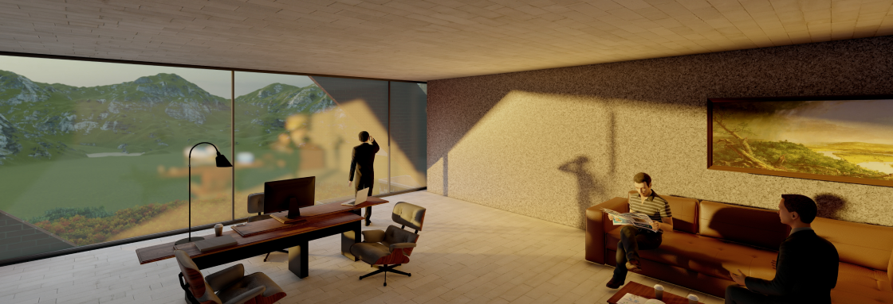

Applying biomimicry to architecture, this design endeavours to
replicate the organic form of a mountain within the intricate
structure of a modern office building.

Intro
The design process for the high-rise office building in Ningbo City,
China proved to be a challenging yet fulfilling endeavor. Factors such
as the structural system, fire prevention protocols, and compliance
with design codes were critical considerations for ensuring the
building's safety and functionality. Paramount among these was
the structural system, demanding meticulous attention to withstand
natural forces like earthquakes and high winds. Additionally, we
carefully assessed the load-bearing capacity and stability, opting for
a robust combination of steel and concrete to construct a resilient
and durable structure capable of enduring the rigors of nature.
Technical Drawings
In this building design, I tried to illustrate my "Biomimicry
Ideology" by implying a form that resembles a mountain, by
cutting parts of the building and adding external staircases
surrounding the building forming an up-rising way that connects most
of the building floors. This form also allowed me to showcase the
various zones in the building with different facades.
The final shape was a result of a series of cut-and-fill strategies,
which granted me the ability to have a skeleton structure building
composed of an external glass curtain.
The main structure of the building consists of a core which is the
main support system in the building, in addition to column grids added
on every floor that contains many open office spaces.
Technology
The implementation of fire prevention protocols was a pivotal
consideration in our design. We took great care to outfit the building
with essential fire safety measures, including fire alarms, sprinkler
systems, and fire doors. Thoughtful planning also went into
establishing effective evacuation routes and strategically placing
fire exits, crucial elements to ensure the building's safety in
the event of a fire.
Aesthetics
Ultimately, we needed to address the design code prerequisites
essential for securing approval from local authorities. Ensuring
compliance with pertinent regulations and codes, encompassing
building, fire, and safety codes, was imperative. Additionally, a
conscientious consideration of aesthetic elements—including materials,
colours, and the overall design—was crucial to align the building with
both regulatory standards and visual harmony.